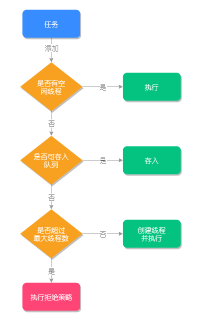
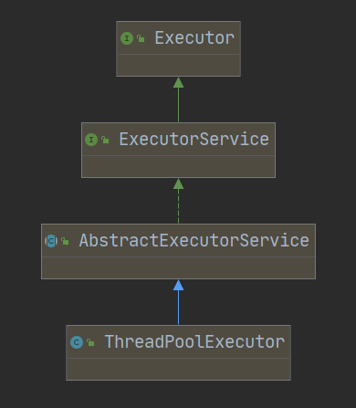

第04讲：详解 ThreadPoolExecutor的参数含义及源码执行流程？
线程池是为了避免线程频繁的创建和销毁带来的性能消耗，而建立的一种池化技术，它是把已创建的线程放入“池”中，当有任务来临时就可以重用已有的线程，无需等待创建的过程，这样就可以有效提高程序的响应速度。但如果要说线程池的话一定离不开ThreadPoolExecutor，在阿里巴巴的《Java 开发手册》中是这样规定线程池的：
线程池不允许使用Executors 去创建，而是通过ThreadPoolExecutor的方式，这样的处理方式让写的读者更加明确线程池的运行规则，规避资源耗尽的风险。
说明：Executors 返回的线程池对象的弊端如下：
1）FixedThreadPool和 SingleThreadPool：允许的请求队列长度为Integer.MAX_VALUE，可能会堆积大量的请求，从而导致OOM。
2）Cached ThreadPool 和ScheduledThreadPool：允许的创建线程数量为Integer.MAX_VALUE，可能会创建大量的线程，从而导致OOM。
其实当我们去看Executors的源码会发现，Executors.newFixedThreadPool0、
Executors.newSingle ThreadExecutor）和Executors.newCachedThreadPool0等方法的底层都是通过ThreadPoolExecutor 实现的，所以本课时我们就重点来了解一下ThreadPoolExecutor的相关知识，比如它有哪些核心的参数？它是如何工作的？
典型回答
ThreadPoolExecutor的核心参数指的是它在构建时需要传递的参数，其构造方法如下所示：
1 | public ThreadPoolExecutor(int corePoolSize, |
第1个参数：corePoolSize 表示线程池的常驻核心线程数。如果设置为0，则表示在没有任何任务时，销毁线程池；如果大于0，即使没有任务时也会保证线程池的线程数量等于此值。但需要注意，此值如果设置的比较小，则会频繁的创建和销毁线程（创建和销毁的原因会在本课时的下半部分讲到）；如果设置的比较大，则会浪费系统资源，所以开发者需要根据自己的实际业务来调整此值。
第2个参数：maximumPoolSize表示线程池在任务最多时，最大可以创建的线程数。官方规定此值必须大于0，也必须大于等于corePoolSize，此值只有在任务比较多，且不能存放在任务队列时，才会用到。
第3个参数：keepAliveTime表示线程的存活时间，当线程池空闲时并且超过了此时间，多余的线程就会销毁，直到线程池中的线程数量销毁的等于corePoolSize为止，如果maximumPoolSize等于corePoolSize，那么线程池在空闲的时候也不会销毁任何线程。
第4个参数：unit 表示存活时间的单位，它是配合keepAliveTime参数共同使用的。
第5个参数：workQueue表示线程池执行的任务队列，当线程池的所有线程都在处理任务时，如果来了新任务就会缓存到此任务队列中排队等待执行。
第6个参数：threadFactory表示线程的创建工厂，此参数一般用的比较少，我们通常在创建线程池时不指定此参数，它会使用默认的线程创建工厂的方法来创建线程，源代码如下：
1 | public ThreadPoolExecutor(int corePoolSize, |
我们也可以自定义一个线程工厂，通过实现ThreadFactory 接口来完成，这样就可以自定义线程的名称或线程执行的优先级了。
第7个参数：RejectedExecutionHandler 表示指定线程池的拒绝策略，当线程池的任务已经在缓存队列 workQueue中存储满了之后，并且不能创建新的线程来执行此任务时，就会用到此拒绝策略，它属于一种限流保护的机制。
线程池的工作流程要从它的执行方法execute()说起，源码如下：
1 | public void execute(Runnable command) { |
其中addWorker(Runnable firstTask，boolean core)方法的参数说明如下：
- firstTask，线程应首先运行的任务，如果没有则可以设置为null；
- core，判断是否可以创建线程的阀值（最大值），如果等于true则表示使用corePoolSize作为阀值，false 则表示使用maximumPoolSize作为阀值。
考点分析
本课时的这道面试题考察的是你对于线程池和ThreadPoolExecutor的掌握程度，也属于Java的基础知识，几乎所有的面试都会被问到，其中线程池任务执行的主要流程，可以参考以下流程图：

与ThreadPoolExecutor 相关的面试题还有以下几个：
- ThreadPoolExecutor的执行方法有几种？它们有什么区别？
- 什么是线程的拒绝策略？
- 拒绝策略的分类有哪些？
- 如何自定义拒绝策略？
- ThreadPoolExecutor 能不能实现扩展？如何实现扩展？
知识扩展
execute（）VS submit（）
execute(）和submit(）都是用来执行线程池任务的，它们最主要的区别是，submit）方法可以接收线程池执行的返回值，而 execute0不能接收返回值。
来看两个方法的且体使用：
1 | ThreadPoolExecutor executor = new ThreadPoolExecutor(2, 10, 10L, TimeUnit.SECONDS, new LinkedBlockingQueue(20)); |
以上程序执行结果如下：
Hello，submit.
Hello，execute.
Success
从以上结果可以看出submit()方法可以配合Futrue来接收线程执行的返回值。它们的另一个区别是
execute()方法属于Executor 接口的方法，而submit()方法则是属于ExecutorService接口的方法，它们的继承关系如下图所示：

线程池的拒绝策略
当线程池中的任务队列已经被存满，再有任务添加时会先判断当前线程池中的线程数是否大于等于线程池的最大值，如果是，则会触发线程池的拒绝策略。
Java自带的拒绝策略有4种：
- AbortPolicy，终止策略，线程池会抛出异常并终止执行，它是默认的拒绝策略；
- CallerRunsPolicy，把任务交给当前线程来执行；
- DiscardPolicy，忽略此任务（最新的任务）；
- DiscardOldestPolicy，忽略最早的任务（最先加入队列的任务）。
例如，我们来演示一个AbortPolicy的拒绝策略，代码如下：
1 | ThreadPoolExecutor executor = new ThreadPoolExecutor(1, 3, 10, TimeUnit.SECONDS, new LinkedBlockingQueue<>(2), new ThreadPoolExecutor.AbortPolicy()); // 添加 AbortPolicy 拒绝策略 |
以上程序的执行结果：
pool-1-thread-1
pool-1-thread-1
pool-1-thread-1
pool-1-thread-3
pool-1-thread-2
Exception in thread”main”java.util.concurrent.RejectedExecutionException:Task com.lagou.interview.ThreadPoolExample$$Lambda$1/1096979270@448139f0 rejected from java.util.concurrent.ThreadPoolExecutor@7cca494b[Running，pool size=3，active threads=
3，queued tasks=2，completed tasks=0]
at
java. util. concurrent. ThreadPoolExecutor$AbortPolicy. rejectedExecution(ThreadPoolExecutorj ava:2063)
at java. util. concurrent. ThreadPoolExecutor. reject(ThreadPoolExecutor java:830)
at java. util. concurrent. ThreadPoolExecutor. execute(ThreadPoolExecutor, java:1379)
at com. lagou. interview. ThreadPoolExample. rejected(ThreadPoolExample. java:35)
at com. lagou. interview. ThreadPoolExample. main(ThreadPoolExample, java:26)
可以看出当第6个任务来的时候，线程池则执行了AbortPolicy 拒绝策略，抛出了异常。因为队列最多存储2个任务，最大可以创建3个线程来执行任务（2+3=5），所以当第6个任务来的时候，此线程池就“忙”不过来了。
自定义拒绝策略
自定义拒绝策略只需要新建一个RejectedExecutionHandler对象，然后重写它的
rejectedExecution0方法即可，如下代码所示：
1 | ThreadPoolExecutor executor = new ThreadPoolExecutor(1, 3, 10, TimeUnit.SECONDS, new LinkedBlockingQueue<>(2), |
以上代码执行的结果如下：
执行自定义拒绝策略
pool-1-thread-2
pool-1-thread-3
pool-1-thread-1
pool-1-thread-1
pool-1-thread-2
可以看出线程池执行了自定义的拒绝策略，我们可以在rejectedExecution中添加自己业务处理的代码。
ThreadPoolExecutor 扩展
ThreadPoolExecutor 的扩展主要是通过重写它的beforeExecute）和afterExecute0方法实现的，我们可以在扩展方法中添加日志或者实现数据统计，比如统计线程的执行时间，如下代码所示：
1 | public class ThreadPoolExtend { |
以上程序的执行结果如下所示：
pool-1-thread-1|before l time=4570298843700
pool-1-thread-2|before ltime=4570298840000
pool-1-thread-1|afterl time=4570327059500|耗时：28.2158毫秒
pool-1-thread-2l afterltime=4570327138100|耗时：28.2981毫秒
pool-1-thread-1|before ltime=4570328467800
pool-1-thread-1| after| time=4570328636800|耗时：0.169毫秒
小结
最后我们总结一下：线程池的使用必须要通过 ThreadPoolExecutor 的方式来创建，这样才可以更加明确线程池的运行规则，规避资源耗尽的风险。同时，也介绍了ThreadPoolExecutor的七大核心参数，包括核心线程数和最大线程数之间的区别，当线程池的任务队列没有可用空间且线程池的线程数量已经达到了最大线程数时，则会执行拒绝策略，Java自动的拒绝策略有4种，用户也可以通过重写rejectedExecution() 来自定义拒绝策略，我们还可以通过重写beforeExecute0和afterExecute0来实现ThreadPoolExecutor的扩展功能。